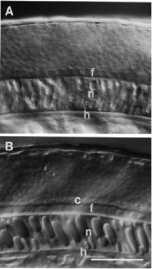

Modified from:
Kimmel et al., 1955.
Developmental Dynamics 203:253-310. Copyright © 1995 Wiley-Liss, Inc.
Reprinted only by permission of Wiley-Liss, a subsidiary of John Wiley &
Sons, Inc.
Fig. 21. The neural tube forms by cavitation. Matched left side Nomarski views (at the AP level of somite 9) focused at the midline with dorsal to the top and anterior to the left. The floor plate (f) of the developing spinal cord lies immediately dorsal the notochord (n), which in turn is dorsal to the hypochord (h). A: Cavitation of the neural rod just begins at the 18-somite stage (18 h), as the floor plate develops a distinctive dorsal boundary. B: The central canal (c) then rapidly appears at this location. 21-somite stage (19.5 h). Notice the enlarging vacuoles within the notochord cells at the same time. Fig. 34C shows a later stage in these developments. Scale bar: 50 µm.

Figure 21